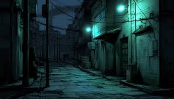
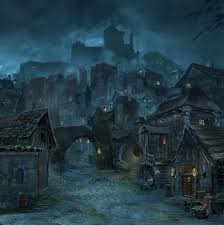
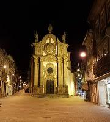

Mapa e Geografia
Cidades: ignia

De acordo com as antigas historias,ignia foi a primeira cidade,
Tambem considerada por muitos a maoir e mais importante. Que tambem e
conhecida como a cidade dos inventores.A terra prospera e rica
abriga a mais alta tecnologia.
tenudia
Esquecida por muitos e amaldiçoada por aqueles que nela habitam,
nesta cidade sua percepção se distorce de acordo com a vontade dos ecos e vultos.
Todo tipo de informação estranha e sugestiva espreita,pronta para ser aprendida.
Isolados os habitantes deste local possuem Visões do passado e do futuro
misserendio
Entre Miséria e luxuria habita a cidade fundada por misserendino
, que ja teve um povo honesto e ruas seguras, mas se reduziu a uma perigosa cidade entre arvores.
A cidade abriga Ladrões e invasores assim como uma rica e extenssa fauna e flora.
Um bom lugar para se começar uma vida do zero.
Clarion
Entre as cidades vizinhas existe Clario,uma cidade de luz,prosperidade
e trabalho duro.Nela se abrigam o culto da luz e o culto da sombra.
Seu povo é conhecido como honesto e virtuoso